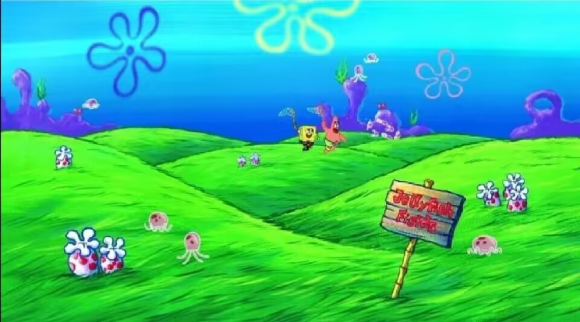

|
旅游的意义是给自己带来许多见识和心灵的放松，释放工作生活中的压力。
旅游是人们调节生活的重要工作，放松紧张的路线和方式，越是忙碌，越是旅游，越是
引人入胜，在自助旅游的过程中细细品味了细腻的情感事项，从这样的背景下，旅游的
照片和购物成为了放松的代名词。旅行中不存在回忆的故事，只有数码相机留下的缺乏
情绪和细节的机械影像。
|
|
|
抓水母
“动漫”这一合称的出现主要是因为日本的动画和漫画产业联系紧密，所以日本动画和漫画在中国传播的过程中，出现了
《动漫时代》这样综合了日本动画和漫画资讯的杂志。因此，“动漫”最早主要在日本动漫的爱好者中使用，用来指日
本的动画和漫画。但随着中国动画和漫画产业的发展，用来指中国的动画和漫画的场合也多了起来。
|
 | |
|
摄影两字一起的意思是“以光线绘图”。摄影是指使用某种专门设备进行影像记录的过程，一般我们使用机械照相机或者数码照相机进行摄影。
有时摄影也会被称为照相，也就是通过物体所发射或反射的光线使感光介质曝光的过程。有人说过的一句精辟的语言：
摄影家的能力是把日常生活中稍纵即逝的平凡事物转化为不朽的视觉图像。
|
||
|
跑步的定义是指陆生动物使用足部移动。它在运动上的定义是一种步伐，双脚不会同一时间碰到地面。它亦可以是一种有氧的运动或厌氧的运动。
跑前和跑后的调整同样重要。跑步前，做一些深蹲和伸展动作，放松紧张的肌肉和骨骼，为接下来的跑步舒活筋骨、抖擞精神。跑步过程中，
要掌握呼吸的节奏，保持均匀舒畅的呼吸，能有效地减轻心肺的疲劳，保持充沛的体力。
|
||
 |
阅读是运用语言文字来获取信息、认识世界、发展思维，并获得审美体验与知识的活动。它是从视觉材料中获取信息的过程。
视觉材料主要是文字和图片，也包括符号、公式、图表等。阅读是一种主动的过程，是由阅读者根据不同的目的加以调节控制的,
陶冶人们的情操，提升自我修养。阅读可以改变思想、获取知识，从而可能改变命运。
|
|
|
唱歌时进行深呼吸，能增强肺部功能，清新血液。歌唱能促成好的身体姿态，优美的形体动作及生动的面部表情。
歌唱能促进思维活跃。歌唱能增强自信心，有益于形成乐观沉稳的性格。歌唱可以锻炼思想集中，增强记忆力。
歌唱能改善讲话能力，建立正确的发音和丰富的音调。歌唱可以熟悉更多的诗词，加深对语言文字的领会能力。
|